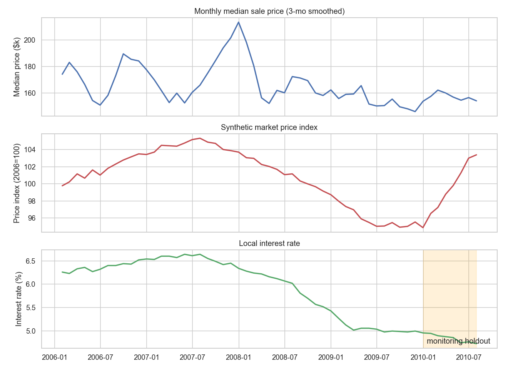
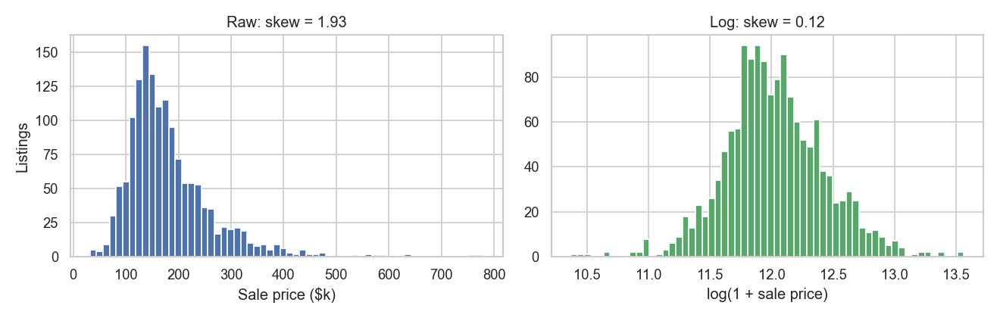
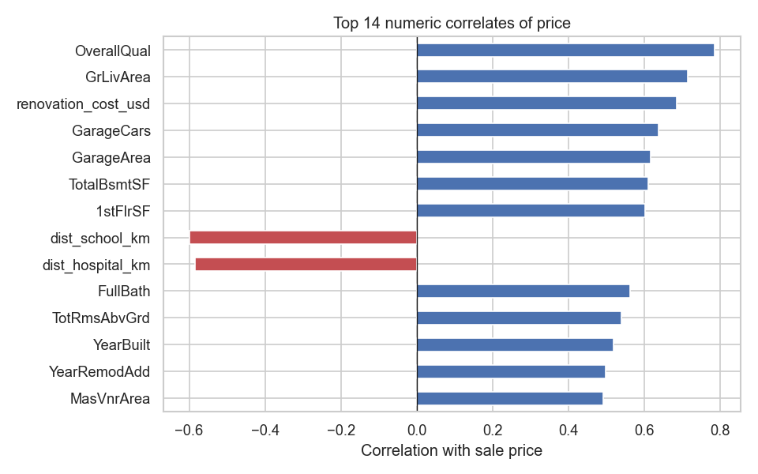
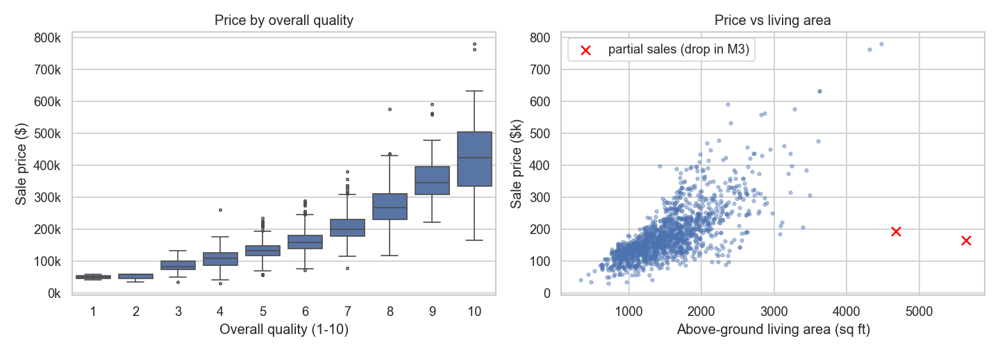
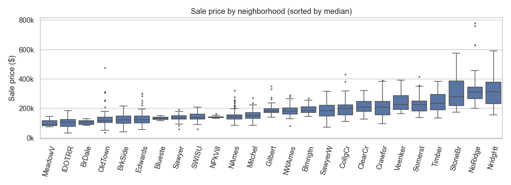
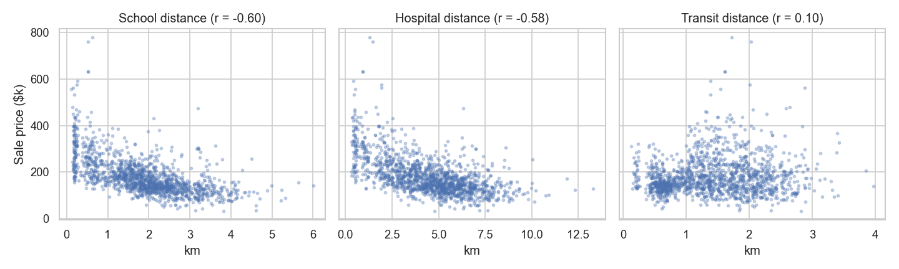
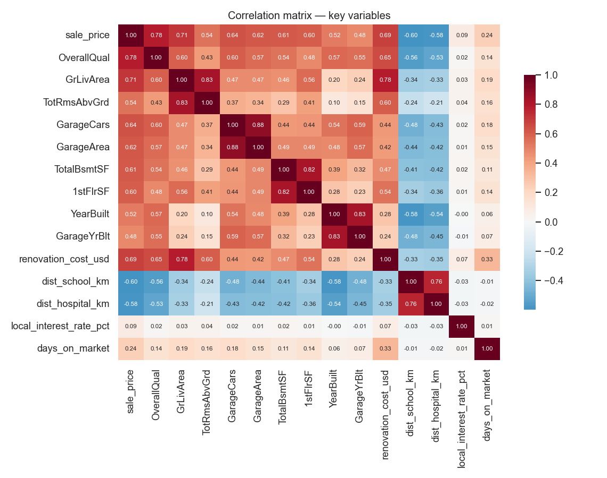
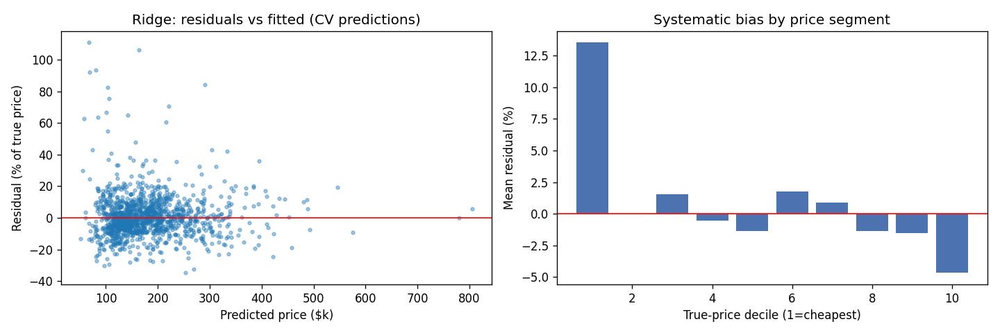
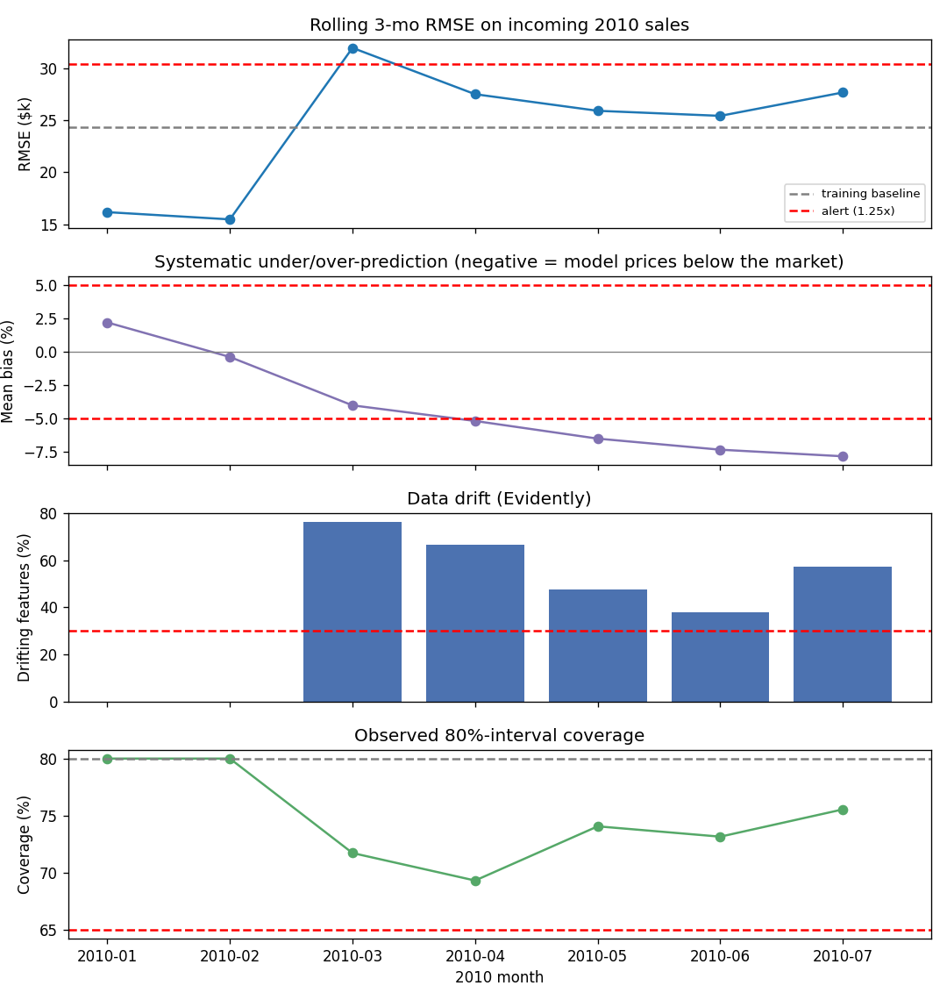

| Member | Student ID | Role |
|---|---|---|
| Đỗ Hoàng Việt | 20252744M | Data Engineer — synthetic data, data dictionary, cleaning |
| Nguyễn Minh Huyền | 20252007M | Data Analyst — EDA, visualization of price drivers |
| Nguyễn Thị Huyền Trang | 20251322M | ML Engineer (Modeling) — features, regression models |
| Bùi Tá Cường | 20242430M | ML Engineer (Evaluation) — CV, residuals, interval calibration |
| Nguyễn Tiến Đức | 20252076M | MLOps Lead — deployment, API, monitoring |
POST /predict — run locally via uvicorn app.api.main:app
| Executive summary | 3 |
| 1 Introduction and business understanding | 4 |
| 2 Data: sources, synthetic extension, and trustworthiness | 5 |
| 3 Exploratory data analysis | 8 |
| 4 Data cleaning | 12 |
| 5 Feature engineering and multicollinearity | 12 |
| 6 Model development and evaluation | 14 |
| 7 Calibrated confidence intervals | 16 |
| 8 Deployment: the working product | 17 |
| 9 Post-deployment monitoring | 18 |
| 10 Business recommendations | 20 |
| 11 Limitations and future work | 20 |
| 12 Conclusion | 20 |
| References | 21 |
| Appendix A — Data dictionary (synthetic fields) | 22 |
| Appendix B — Reproducibility guide | 23 |
This project builds the complete lifecycle of an analytics product for a real estate listing platform: a model that answers, for any property, "what is its estimated market price — and how confident is that estimate?" The result is a live, publicly accessible valuation tool backed by a documented, reproducible pipeline and a monitoring system that demonstrably detects when the model goes stale.
Data. The Kaggle Ames housing dataset (1,460 sales, 80 attributes) was extended with 12 synthetic contextual fields — amenity distances, renovation history, days-on-market, and a macro layer of interest rates and a market price index. The extension is anchored to the dataset's real sale dates (January 2006 – July 2010), so the data carries a genuine time axis through the financial crisis. All 175 sales from 2010 were held out as the "incoming stream" for post-deployment monitoring.
Model. Five regressors were compared under 5-fold cross-validation on the log-price target. Ridge regression achieved the best point accuracy (MAPE 8.99%, R² 0.916). We deployed the quantile-LightGBM system instead (MAPE 9.78%) because the business deliverable is a calibrated confidence range: three quantile models plus conformalized quantile regression yield an 80% interval whose coverage we verified empirically at 80.5% — after discovering that the naive quantile band covered only 59% while claiming 80%.
Product. The tool is deployed on Streamlit Community Cloud with the model running in-process, accompanied by a FastAPI prediction service sharing the same serving code. Interval width drives the user experience: ≈$35k ranges for typical homes, ≈$78k for high-value homes, with explicit advice to seek an appraisal when the range is wide.
Monitoring. Replaying 2010 month-by-month through Evidently against four pre-defined retraining triggers, the system recommends retraining from March 2010: the market rebounded faster than the training window, and the model's systematic bias grew to −7.9% by July. The exercise demonstrates the report's central operational lesson — input-drift detection shows that conditions changed, but only error and bias monitoring show that it matters.
Key numbers at a glance:
| Item | Value |
|---|---|
| Listings after cleaning (training window / monitoring stream) | 1,458 (1,283 / 175) |
| Best point model (5-fold CV) | Ridge — RMSE $23,195, MAPE 8.99%, R² 0.916 |
| Deployed model | Quantile LightGBM (p10/p50/p90) + CQR |
| Interval coverage: claimed / raw / after calibration | 80% / 59.1% / 80.5% |
| First retraining signal in the 2010 stream | March 2010 (RMSE & drift); bias alert from April |
A listing platform loses both ways when prices are wrong. An inflated asking price filters out serious buyers, extends time-on-market, and eventually forces a visible, credibility-damaging price cut. An underpriced home sells quickly but leaves the seller's money on the table — and sellers who later realize it blame the platform. Between these failure modes sits the agent, who must justify a number to both sides long before any formal appraisal exists.
The estimate alone is not enough; its reliability changes the decision. An estimate of \(\$180\mathrm{k} \pm \$18\mathrm{k}\) supports listing immediately at the point price. The same point estimate at \(\pm\$70\mathrm{k}\) says the home is unusual for the market — order an appraisal before committing. A valuation tool that communicates only a point number hides exactly the information that determines how it should be used.
Success criteria (KPIs) agreed before modeling:
Over- and under-valuation are not symmetric in business impact. Overpricing costs time: our synthetic days-on-market field encodes the empirical rule that homes priced above their neighborhood's typical level sit longer (Section 2.3), and every extra week on market weakens the negotiating position. Underpricing costs money directly at closing. The confidence range addresses both: it tells the seller how much downside protection an asking price near the upper bound still has, and warns when the model simply does not know.
Base (required): the Kaggle competition dataset "House Prices — Advanced Regression Techniques" — 1,460 residential sales in Ames, Iowa with 80 structural, locational and condition attributes plus the sale price [1]. Competition rules prohibit redistribution, so the raw files are not committed to the repository; the README documents the download procedure and every derived artifact is committed instead.
Extension (required synthetic component): 12 contextual fields generated in Python with seeded randomness. Appendix A reproduces the full data dictionary — column, type, unit, valid range, and the generation logic or business assumption behind each field. Three design principles governed the generation, described next.
The course requires monitoring "as new sales data arrives", which presupposes a
time dimension the static Kaggle snapshot lacks. Rather than inventing listing
dates, we anchored listing_date to the sale dates already inside the
data (YrSold/MoSold): January 2006 – July 2010, 55 months.
Two properties follow. First, internal consistency — no row is "listed" years after
it actually sold, a contradiction any careful reviewer would find in an invented
axis. Second, the window spans a genuine market narrative — the U.S. financial
crisis — giving the macro layer a defensible shape.
A synthetic macro layer is overlaid on this axis: a local interest-rate series following the broad path of U.S. 30-year mortgage rates (6.25% in 2006, peaking 6.65% mid-2007, cut to 4.75% by 2010), and a market price index with a boom (+5.5% to mid-2007), a crisis decline (−10% peak-to-trough through 2009), and a +9.5% rebound during 2010. Each sale price is re-expressed under this index:
$$\mathrm{sale\_price}_i \;=\; \mathrm{SalePrice}_i \times \frac{I(m_i)}{\bar{I}} \times \varepsilon_i, \qquad \varepsilon_i \sim \mathrm{LogNormal}(0,\,0.02)$$where \(I(m_i)\) is the index level in listing month \(m_i\), \(\bar I\) the
window average, and \(\varepsilon_i\) idiosyncratic negotiation noise. The original
Kaggle price is preserved unmodified in sale_price_kaggle for full
auditability.
The rebound is the designed drift signal: it occurs entirely inside the monitoring holdout (all 175 sales of 2010), so a model trained on 2006–2009 has never seen rising prices and under-predicts 2010 progressively — for an explainable business reason, not an arbitrary synthetic shock. Its magnitude was deliberately chosen to be detectable within a seven-month stream; sharp post-crisis recoveries of this size occurred in real U.S. metropolitan markets.

Purely random contextual fields would be easy to generate and worthless to analyze: they could not carry any signal for EDA or modeling. Every synthetic field is therefore generated conditionally on real structure:
Real listing pipelines produce dirty data. Because the Kaggle base is relatively clean, Module 3 would otherwise have little genuine work, so five realistic data-quality problems were injected deliberately — seeded, documented with exact rates, only into synthetic fields, and only before 2010 so the monitoring stream is never confused with dirt:
| # | Field | Injected problem | Rate (realized) |
|---|---|---|---|
| 1 | dist_school_km | Missing — field left blank at listing entry | 2% (26 rows) |
| 2 | renovated | Inconsistent free-text labels: Y, yes, YES, N, no, NO | 4% (51 rows) |
| 3 | days_on_market | Legacy sentinel 999 = "unknown" | 0.4% (5 rows) |
| 4 | dist_transit_km | Entered in metres instead of km | 0.3% (4 rows) |
| 5 | whole row | Home re-posted days later under a new listing id | 12 rows |
Because the ground truth is known, the cleaning module can prove — not merely claim — that each problem was found and fixed (Section 4).
Every property claimed above is encoded as an automated test: the time axis matches the real sale dates row-by-row; the monitoring stream contains no injected dirt; school distance correlates negatively with price while transit does not; renovation fields agree with the remodel column; the target carries the boom–crisis–rebound shape; and regeneration from the fixed seed reproduces the files byte-for-byte. A documented claim that could silently rot is worth little in an analytics product; the test suite makes the data dictionary binding.
The EDA (executed notebook in notebooks/) answers three business
questions: what drives price, how the market moves over time, and which variables
are redundant. It runs on the raw extended data, so the data-quality problems it
surfaces hand off directly to cleaning.
Sale prices have median $162,900 against mean $181,407 with a long right tail to $779k; skewness 1.93. Untransformed, expensive homes would dominate any squared-error objective. After the transform
$$y \;=\; \log\left(1 + \mathrm{SalePrice}\right)$$skewness falls to 0.12, and multiplicative structure (a garage adds a percentage, not a fixed dollar amount) becomes additive — friendlier to linear baselines. All models in Section 6 predict \(y\); metrics are reported after back-transforming to dollars.

Overall quality (r = 0.79) and above-ground living area (r = 0.71) dominate — median price nearly quadruples from quality 3 ($85k) to quality 9 ($346k). The synthetic amenity fields behave exactly as designed: school distance r = −0.60, hospital −0.58, transit ≈ +0.10. Renovation cost correlates 0.69 with price but is partly derivative — it was generated from area × quality, so it echoes those drivers rather than adding independent signal; it is flagged for the multicollinearity check.


Neighborhood medians span $90k (MeadowV) to $313k (NridgHt) — a 3.5× spread on physically comparable structures. The amenity panel explains much of the premium in our data: price falls steadily with school distance while the transit panel is flat. For the platform this is an actionable, falsifiable statement: school proximity is priced in; bus access is not.


Figure 1 already showed the trend: +5% boom to mid-2007, −10% through 2009, and a rebound the training window never sees. Days-on-market lengthens in the cold market (median 38 days in 2008 vs 32.5 in 2006) and interest rates fall from 6.6% to 4.7%. The EDA's operational conclusion is the premise of Section 9: in a moving market, a fixed model is a depreciating asset; monitoring is not optional.
Four pairs exceed |r| = 0.8: garage cars / garage area (0.88), rooms / living area (0.83), first-floor / basement size (0.82), year built / garage year (0.83) — plus the constructed renovation-cost echo. Left unaddressed, this destabilizes linear coefficients and muddies any "what drives price" story told from them. Section 5 prunes to one variable per concept and verifies with VIF.

Every fix targets a diagnosed cause; nothing is dropped or imputed blindly. The cleaning script prints this evidence table on every run, and assertions guarantee no unexpected missing values leave the stage.
| Step — problem and diagnosed cause | Fix | Before | After |
|---|---|---|---|
| Duplicate listings: same home re-posted under a new listing id | Keep the earliest posting (the original listing event) | 12 | 0 |
| Renovation flag entered as free text (Y / yes / NO / …) | Normalize to canonical Yes/No | 51 | 0 |
| Days-on-market sentinel 999 = "unknown" from a legacy export | To missing, then impute the listing-quarter median (market conditions drive DOM, so imputation stays within period) | 5 | 0 |
| Transit distances implausibly > 100 km in a town ~10 km across — metre entry | Divide by 1,000 | 4 | 0 |
| Missing school distances (blank at entry) | Neighborhood median — amenity access is a neighborhood property by construction | 26 | 0 |
| Kaggle categoricals where NA means "no such feature" (pool, alley, fence…) | Explicit category, so "absent" is information rather than a gap | 7,480 cells | 0 |
| LotFrontage genuinely missing | Neighborhood median — street frontage is set by the subdivision plan | 259 | 0 |
| Partial-sale outliers: two homes > 4,000 sq ft sold far below trend (Figure 4) | Dropped — not market transactions a valuation tool should learn from | 2 rows | — |
1,472 listings in → 1,458 out. One imperfection class deserves comment: the renovation-flag cleanup can be verified against ground truth, because the canonical value is recoverable from the Kaggle remodel-year column — after normalization the flag agrees with it in 100% of rows. This is the payoff of injecting dirt with known truth (Section 2.4): cleaning quality is measured, not assumed.
Only information available at valuation time may enter the model. Two fields were excluded on this principle:
The interest rate stays: it is public knowledge on listing day.
Derived: property age, years since remodel, combined bathrooms (full + 0.5·half, both floors), renovation flag and cost, listing month (seasonality), and an amenity-proximity score (kept for reporting, excluded from the model as a function of the three distances already present). Redundancy is resolved by keeping one variable per concept: garage cars, not garage area (r = 0.88); living area + basement area, not room count (r = 0.83). The final feature set: 16 numeric + 6 categorical variables.
where \(R_j^2\) comes from regressing feature \(j\) on all other numeric features. Values above 10 conventionally signal problematic collinearity.
| Feature | VIF | Feature | VIF |
|---|---|---|---|
| property_age | 3.93 | renovation_cost_usd | 1.54 |
| OverallQual | 3.06 | OverallCond | 1.46 |
| dist_school_km | 2.91 | Fireplaces | 1.43 |
| GrLivArea | 2.62 | LotArea | 1.17 |
| dist_hospital_km | 2.59 | dist_transit_km | 1.13 |
| years_since_remodel | 2.28 | local_interest_rate_pct | 1.02 |
| total_baths | 2.16 | listing_month | 1.01 |
| GarageCars | 1.90 | TotalBsmtSF | 1.62 |
Maximum VIF is 3.93 — comfortably below the threshold, so the linear baselines of Section 6 are stable and their coefficients interpretable.
All models are trained on the 1,283 sales of the training window (2006–2009) and compared with 5-fold cross-validation (shuffled, fixed seed). Predictions are made in log space and back-transformed; metrics are computed on the dollar scale:
$$\mathrm{RMSE} = \sqrt{\tfrac{1}{n}\textstyle\sum_{i=1}^{n}(y_i - \hat y_i)^2} \qquad\quad \mathrm{MAE} = \tfrac{1}{n}\textstyle\sum_{i=1}^{n}\lvert y_i - \hat y_i\rvert$$ $$\mathrm{MAPE} = \tfrac{100\%}{n}\textstyle\sum_{i=1}^{n} \left\lvert\tfrac{y_i - \hat y_i}{y_i}\right\rvert \qquad\quad R^2 = 1 - \frac{\sum_i (y_i - \hat y_i)^2}{\sum_i (y_i - \bar y)^2}$$RMSE penalizes large misses (relevant when a single badly mispriced luxury home is costly); MAE reflects the typical case; MAPE normalizes across price levels and maps directly to the "negotiation margin" KPI; R² summarizes explained variance. Linear models receive standardized numerics and one-hot categoricals; tree models receive raw numerics and native categorical splits.
| Model | Key settings | RMSE | MAE | MAPE | R² |
|---|---|---|---|---|---|
| Linear Regression | — | $23,409 | $15,806 | 9.11% | 0.914 |
| Ridge | α = 10 | $23,195 | $15,573 | 8.99% | 0.916 |
| Lasso | α = 0.001 | $23,324 | $15,670 | 9.04% | 0.915 |
| Random Forest | 300 trees, min leaf 2 | $29,509 | $18,469 | 10.43% | 0.863 |
| LightGBM | 600 trees, lr 0.05, 31 leaves | $27,441 | $17,334 | 9.78% | 0.882 |
The linear family wins, and the result is instructive rather than embarrassing: after the log transform the price surface is close to linear in the drivers, and with only ~1,300 training rows, low-variance estimators beat flexible ones. A regularization sweep on LightGBM (smaller trees, feature/row subsampling) improved it only marginally (≈$26.6k RMSE), confirming the pattern is structural, not a tuning artifact.
Cross-validated residuals show no trend against fitted values and no material bias in deciles 2–9. Two findings worth reporting: the cheapest decile is over-predicted by ≈13% on average (the model is reluctant to believe how cheap the cheapest homes are), and the most expensive decile is slightly under-predicted (−4.7%) — both classic shrinkage-toward-the-mean behavior. The first is flagged as a limitation; neither threatens the tool's core use, and the confidence interval widens exactly where these effects live.

We deploy the quantile LightGBM system — three models sharing one regularized configuration (1,500 trees, learning rate 0.03, 8 leaves, feature and row subsampling, L2 = 1.0), trained at \(\alpha = 0.10, 0.50, 0.90\), with the median model serving as the point estimate. The reasoning, stated openly:
Each quantile model minimizes the pinball loss
$$\mathcal{L}_{\alpha}(y,\hat{y}) \;=\; \max\bigl(\alpha\,(y-\hat{y}),\; (\alpha-1)\,(y-\hat{y})\bigr), \qquad \alpha \in \{0.10,\, 0.50,\, 0.90\},$$whose minimizer is the conditional \(\alpha\)-quantile [2]. The p10–p90 band therefore claims 80% coverage by construction.
On a 20% calibration split (257 sales) never used in training, the raw band contained the true price only 59.1% of the time. This is a known failure mode: quantile estimates on finite samples are themselves noisy and systematically too narrow. Shipping this band would have violated the honesty KPI while looking perfectly rigorous.
CQR [3] measures the shortfall on the calibration set through the conformity score
$$E_i \;=\; \max\bigl(\hat{q}_{0.10}(x_i) - y_i,\;\; y_i - \hat{q}_{0.90}(x_i)\bigr)$$— positive where the band missed, negative where it had slack — and widens the band by the empirical \((1-\alpha)\)-quantile of the scores:
$$\hat{C}(x) \;=\; \Bigl[\hat{q}_{0.10}(x) - Q_{1-\alpha}(E),\;\; \hat{q}_{0.90}(x) + Q_{1-\alpha}(E)\Bigr], \qquad 1-\alpha = 0.80.$$The method carries a finite-sample coverage guarantee under exchangeability, and crucially preserves the shape of the quantile band — wide for unusual homes, narrow for common ones — while fixing its level. (Scores are computed in log space, so the correction is multiplicative in dollars.)
The interval is not a statistical garnish; it drives the user experience. The deployed tool translates relative width into advice: a tight range (<25% of the estimate) is labeled a common home profile; a wide range (>40%) explicitly recommends a professional appraisal before pricing. The width thereby routes low-confidence cases to the expensive-but-reliable channel — which is exactly how a platform should consume model uncertainty.
Two consumer surfaces share one serving layer (ValuationService),
so they can never disagree:
POST /predict
and GET /health with OpenAPI documentation. All fields are optional
and validated (unknown neighborhood values return an explicit 422 with the valid
list, never a silent wrong answer); the response echoes which defaults were
applied.POST /predict
{"Neighborhood": "NAmes", "GrLivArea": 1500, "OverallQual": 5, "property_age": 30}
→ {"estimate_usd": 165900, "range_low_usd": 135800, "range_high_usd": 178600,
"coverage": 0.8, "relative_width_pct": 25.8, "defaults_applied": ["TotalBsmtSF", …]}
Free-tier deployment is the most binary deliverable — it runs or it does not — so the pipeline was proven in week one with a placeholder model, before any real modeling. The insurance paid out almost immediately: the original target (Hugging Face Spaces) moved all compute apps behind a paid plan mid-project. Because deployment was already a solved, tested path, pivoting to Streamlit Community Cloud (free, approved by the brief, deploying straight from the public GitHub repository) cost hours, not weeks, and required zero application changes.
Python 3.11 everywhere; every dependency pinned; a lean deployment requirement set kept separate from the development environment so monitoring and EDA libraries never ship to production; one fixed seed governs data generation, splits, and model training. Appendix B lists the complete command sequence that rebuilds every artifact in this report from the raw Kaggle files. A test suite (data invariants, service sanity, API contract, and a render test that executes the Streamlit app script) runs on every change.
The 175 held-out sales of 2010 are replayed month by month through Evidently [4], exactly as a production system would meet new sales. Each month is evaluated on a rolling three-month window: single months carry only 6–48 sales, too few for stable statistics — we verified that a 10-row window flags every feature as drifted, which is noise, not signal. Drift tests additionally require at least 40 rows; the calendar month field is excluded from drift testing since the calendar always "moves". Four retraining triggers were fixed before the stream was examined — committing to thresholds up front prevents tuning alerts until they fire:
| Trigger | Definition | Rationale |
|---|---|---|
| T1 — Data drift | >30% of input features drift (per-column statistical tests) | The world the model sees has changed |
| T2 — Performance | Rolling RMSE > 1.25 × training baseline ($24.4k) | Errors have materially grown |
| T3 — Systematic bias | |rolling mean error| > 5% of window median price | Consistent one-directional mispricing distorts the platform even at acceptable RMSE |
| T4 — Interval health | Observed coverage of the 80% range < 65% | The confidence promise itself is breaking |
| Month | Window n | RMSE | Bias | Drift share | Coverage | Verdict |
|---|---|---|---|---|---|---|
| 2010-01 | 10 | $16,180 | +2.2% | n/a (<40) | 80% | — |
| 2010-02 | 25 | $15,484 | −0.4% | n/a (<40) | 80% | — |
| 2010-03 | 46 | $31,957 | −4.0% | 76% | 72% | Retrain: T1 + T2 |
| 2010-04 | 75 | $27,507 | −5.2% | 67% | 69% | Retrain: T1 + T3 |
| 2010-05 | 108 | $25,913 | −6.5% | 48% | 74% | Retrain: T1 + T3 |
| 2010-06 | 123 | $25,427 | −7.4% | 38% | 73% | Retrain: T1 + T3 |
| 2010-07 | 90 | $27,676 | −7.9% | 57% | 76% | Retrain: T1 + T3 |

The story unfolds in three acts. January–February look healthy: errors below baseline, coverage on target. March breaks first — an RMSE spike coincides with drift crossing its threshold, driven by an interest-rate regime the training window never contained (drift score 1.9 versus the 0.1 test threshold) plus a genuine post-crisis shift in the mix of homes coming to market. From April, the signature of the designed rebound takes over: RMSE settles back near baseline, but systematic bias marches from −0.4% to −7.9% — the model prices every home below a recovering market — while interval coverage sags from 80% to ~73%, approaching but not breaching its floor.
The project delivers the full lifecycle the course asked for: a documented and deliberately imperfect synthetic data layer with a real time axis; EDA that turns correlations into business claims; cleaning that proves itself against known ground truth; a cross-validated model comparison with an openly reasoned deployment choice; confidence intervals whose stated 80% is verified rather than asserted; a live tool and API sharing one serving path; and monitoring that catches — for explainable reasons and on pre-committed thresholds — the precise moment the model begins to age. The through-line is a single principle: every claim the system makes about itself is either tested or measured.
Grain: one row per listing, keyed to the Ames data by Id. Macro
fields are joined from a monthly series. Full version with file-level details:
DATA_DICTIONARY.md in the repository.
| Column | Type | Unit | Valid range | Generation logic / business assumption |
|---|---|---|---|---|
| listing_id | str | — | L- + 6 digits | Platform listing key; injected duplicates use prefix L-9. |
| listing_date | date | — | 2006-01 … 2010-07 | Real Ames sale month (YrSold/MoSold) + random day 1–27. |
| dist_school_km | float | km | 0.1 – ~6 | Neighborhood base + lognormal scatter; pricier neighborhoods closer to schools (realized r = −0.60). |
| dist_hospital_km | float | km | 0.5 – ~14 | Same mechanism, range 1.0–8.0 km. |
| dist_transit_km | float | km | 0.1 – ~4 | Neighborhood base drawn independently of price (bus lines follow roads, not wealth); r ≈ +0.1. |
| renovated | str | — | Yes / No | Yes iff Kaggle YearRemodAdd > YearBuilt — consistent with the real remodel column. |
| renovation_cost_usd | float | USD | ~$15k – $400k; NaN if never renovated | Living area × ($12 + $3.2 × OverallQual)/sq ft × lognormal(σ = 0.30). |
| days_on_market | int | days | 3 – ~250 | 35 × (price ÷ neighborhood median)^1.8 × market-coldness^6 × lognormal(σ = 0.35). |
| local_interest_rate_pct | float | % p.a. | 4.7 – 6.7 | Monthly macro series shaped like US 30-yr mortgage rates through the crisis. |
| market_price_index | float | index, 2006-01 = 100 | ~94 – 106 | Boom–crisis–rebound; +9.5% rebound entirely inside the 2010 monitoring stream (designed drift signal). |
| sale_price | int | USD | ~$34k – $779k | Modeling target — Kaggle price re-expressed under the index (formula in §2.2). |
| sale_price_kaggle | int | USD | $34,900 – $755,000 | Original Kaggle SalePrice, preserved unmodified for audit. |
Injected data-quality problems and their realized rates are listed in §2.4; all injections are restricted to synthetic fields and to listings before 2010.
Requirements: Python 3.11; the Kaggle files train.csv,
test.csv, data_description.txt placed in
data/raw/ (download requires a Kaggle account; competition rules
forbid redistribution).
python3.11 -m venv .venv && source .venv/bin/activate pip install -r requirements-dev.txt # full env; requirements.txt = lean deploy set python -m src.data_generation.generate # synthetic data (byte-identical per seed) jupyter nbconvert --execute --inplace notebooks/eda_price_drivers.ipynb python -m src.cleaning.clean_listings # prints the before/after evidence table python -m src.features.build_model_table python -m src.modeling.compare_models # 5-fold CV comparison + residual figures python -m src.modeling.train_final # quantile models + conformal calibration python -m src.monitoring.run_monitoring # replays 2010, writes Evidently reports pytest tests/ # data invariants + service/API/app tests streamlit run app/streamlit_app.py # the valuation tool, locally uvicorn app.api.main:app # the prediction API → /docs
Every step is seeded (RANDOM_SEED = 42); outputs are reproducible
byte-for-byte. Monitoring reports land in monitoring/reports/; report
figures in reports/figures/.